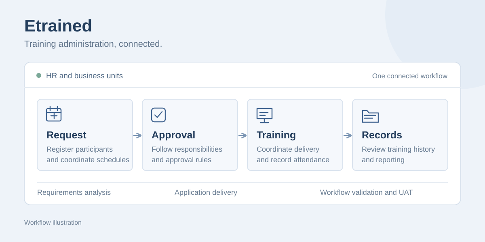

PT Panasonic Manufacturing Indonesia · 2025
Etrained
Connecting training requirements, approvals and records in one application.
- Business systems analysis
- Full-stack development
- Functional testing
- UAT

- My role
- Software Engineer / Full Stack Developer
- Engagement
- Internship · Jan–Dec 2025
- Tools
- C#, ASP.NET MVC, SQL Server, Excel, Figma, Postman
- Context
- Internal training administration
The business problem
Training registration, approvals, schedule communication and reporting involved separate administrative tasks. HR and business units needed a consistent way to coordinate activities and track employee training history.
Start with the people and the process
I worked with HR and business-unit stakeholders to clarify operating needs, approval rules and user responsibilities. Those discussions became process maps, user journeys and relational data models.
Different users needed different actions and access. Mapping those responsibilities helped turn a set of requests into a coherent application workflow.
From requirements to implementation
I owned the analysis and full-stack delivery of Etrained using ASP.NET MVC and SQL Server. The application brought related training activities into one system:
- Scheduling, participant registration and hierarchical approvals
- Controlled rescheduling, notifications and training reminders
- Excel imports with validation for training data
- Attendance, training records and employee history
- Operational dashboards and automated PDF reporting
Validate the business workflow
I checked application behavior against business requirements through functional testing and user acceptance testing (UAT). API checks supported the testing of registration, approval and reporting behavior within the application.
The result
A shared training administration application supporting a workforce of 1,000+ employees, giving HR and business units a consistent place to coordinate approvals, monitor participation and completion, and access training records.
Etrained is an internal company application. This case study uses a high-level workflow illustration.
Discuss my experience